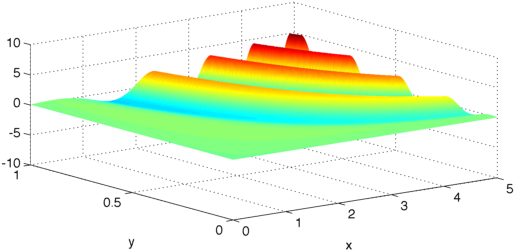
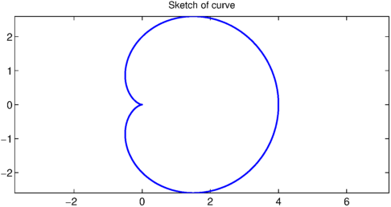
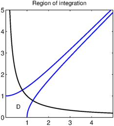
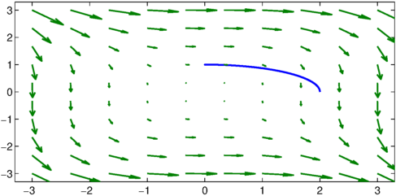
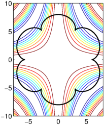
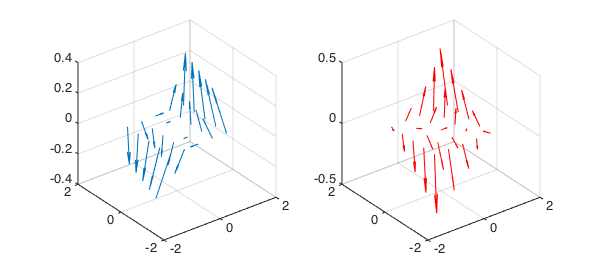

First year maths students at Oxford University take a course called Multivariable Calculus. In this course they are asked to calculate things with pen and paper, and they come to realise how cumbersome it can be to work out multidimensional integrals by hand. In this example we use Chebfun2 to explore a few of their questions but, in general, we do not give the answers.
Integration of a scalar-valued function
The first question on the first problem sheet is to compute the value of
$$ \int_0^a \int_0^b xy\cos(x^2y+y) dxdy, $$
and we can compute this integral if we set, for instance, $a=1$ and $b=5$. Here is a plot of the integrand:
a = 1; b = 5; integrand = chebfun2(@(x,y) x.*y.*cos(x.^2.*y+y),[0 b 0 a]); plot(integrand), zlim([-10 10])

The students calculate the answer in closed form, but Chebfun2 can compute the integral numerically:
ans = integral(integrand) % computed quantity exact = -sin(1/2)^2 + sin(13)^2/26 % student's closed form
ans = -0.223058834033789 exact = -0.223058834033789
Computing the area enclosed by a curve
The students are also asked to compute several areas enclosed by curves. There is nothing 2D about this problem and we can just use ordinary Chebfun (see [1]).
Show that the area bounded by the curve $r = a(1+\cos(\theta))$, $0\leq \theta < 2\pi$ is exactly $3/2\pi a^2$. We answer this question with the choice of $a = 2$. Here is a sketch of the curve:
a = 2;
c = chebfun(@(theta) a*(1+cos(theta)).*exp(1i*theta),[0 2*pi]);
plot(c), axis equal
FS = 'fontsize';
title('Sketch of curve',FS,12)

Here is the computed area bounded by the curve and the exact area:
ans = integral(real(c).*diff(imag(c))) % area bounded by curve exact = 1.5*pi*a^2
ans = 18.849555921538741 exact = 18.849555921538759
The expression for the area enclosed by the curve can be found by Green's theorem, though the first year students calculate the area by a change of variables.
A change of variables
First year students are expected to change routinely from Cartesian to polar, cylindrical and spherical coordinates, and for less standard variable transforms a hint is usually given in the question. In one question the students are asked to evaluate
$$ \int_D (x^2+y^2) dxdy $$
over the finite region $D$ in the positive quadrant bounded by the curves
$$ x^2-y^2=\pm 1, \qquad xy=1/2. $$
In general, an Oxford student's drawing skills are not up to their mathematical ability, but Chebfun2 can draw an accurate diagram! Here is the region $D$:
d = [0 5 0 5];
u = chebfun2(@(x,y) x.^2-y.^2,d);
v = chebfun2(@(x,y) x.*y-1/2,d);
c1 = roots(u-1); c2 = roots(u+1); c3 = roots(v-1/2);
plot(c1), hold on, plot(c2), plot(c3,'k'), axis square
title('Region of integration',FS,12), hold off
text(.5,.5,'D',FS,12)

The question tells the students to change to the variables $u=x^2-y^2$ and $v=xy$, which can be done quite straightforwardly. Most students are able to make this simple, but non-standard change of variables, and calculate the correct answer. We will not reveal the answer here.
Line integrals with vector-valued functions
Simple line integrals start appearing around week 4 of the course, and students find the notation confusing at first, but are still very impressive human calculators. Almost every student is able to solve the following problem: calculate the integral of
$$ \int_C \left(y^2,-x^2\right)\cdot d\mathbf{r}, $$
where $C$ is the portion of the ellipse $x^2/4+y^2=1$ that lies in the positive quadrant.
In this question it is easy to parameterise the curve by $x=2\cos(t)$ and $y=\sin(t)$, and we can then use the integral command in chebfun2v to compute the result:
d = 3*[-1 1 -1 1]; C1 = chebfun(@(t) 2*cos(t) + 1i*sin(t),[0 pi/2]); F = chebfun2v(@(x,y)y.^2,@(x,y) -x.^2,d); integral(F,C1)
ans = -3.999999999999998
Here is the plot of the parameterised curve, and the vector field of $F$:
plot(C1,'linewidth',2), axis(d), hold on quiver(F), hold off

The diagram shows that $F$ always points in a direction approximately opposite to the direction of the curve's tangent vector and hence, the result is negative --- a first order sanity check.
For more general curves a parameterisation may be very difficult, or impossible, to find. Instead, in this example, we can compute a numerical parameterisation and then use the integral command in chebfun2v.
level = chebfun2(@(x,y) x.^2/4 + y.^2-1,[0 3 0 3]); C2 = roots(level); integral(F,C2)
ans = -3.970176744730233
We did not obtain machine precision because the curve is approximated to only 4-5 digits due to several limitations of the algorithm for computing the zero contours of a function.
Line integrals with scalar-valued functions
The students also integrate scalar-valued functions over curves. For example, what is the integral of a $\cos(xy/10)$ over the "flower" curve?
t = chebfun('t',[0,2*pi]);
b = 1; m = 7; a = (m-1)*b;
x = (a+b)*cos(t) - b*cos((a+b)/b*t);
y = (a+b)*sin(t) - b*sin((a+b)/b*t);
c = x + 1i*y; % flower curve
f = chebfun2(@(x,y) cos(x.*y/10),[-8 8 -10 10]); % integrand
contour(f), axis equal tight, hold on
plot(c,'k'), hold off

Here is the computed integral:
integral(f,c)
ans = -7.429899228439556
Vector calculus identity
In the second half of the course the students begin to study the vector calculus operators: div, grad, and curl. They are asked to prove many vector calculus identities, one of which is
$$ \nabla\cdot(F\wedge G) = G\cdot(\nabla \wedge F) - F\cdot(\nabla \wedge G). $$
We can verify this identity for a chosen $F$ and $G$:
F = chebfun2v(@(x,y) y,@(x,y) x.^2,@(x,y) x); G = chebfun2v(@(x,y) cos(2*x),@(x,y) x,@(x,y) x+y); subplot(1,2,1), quiver3(F,'numpts',5) subplot(1,2,2), quiver3(G,'r','numpts',5)

The vector calculus identity holds with a small error. If it were done by hand, LHS and RHS would be exactly equal.
LHS = divergence(cross(F,G)); RHS = (dot(G,curl(F)) - dot(F,curl(G))); norm(LHS-RHS)
ans =
5.472336319999712e-14
Further comments
The multivariable course has another two weeks to go, out of a total of only eight weeks. This example will be updated if Chebfun2 is able to explore any more topics from the multivariate calculus course.
This is an adapted version of a document that I presented to the first year students. I believe they had not appreciated that vector calculus could be done with a computer, and they were amazed at how visual vector calculus can be. The students are exceptionally bright, extremely enthusiastic and know MATLAB.
References
- Chebfun Example geom/Area